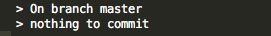
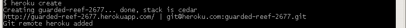
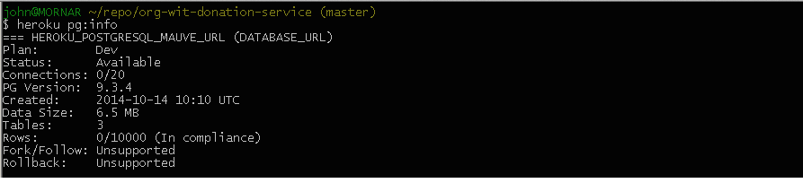
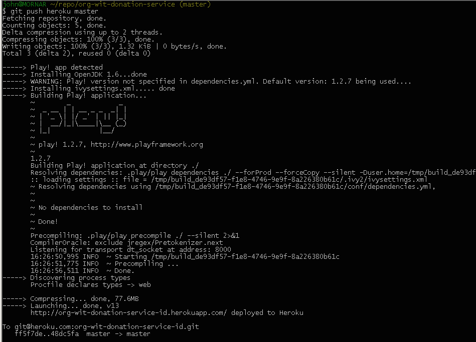
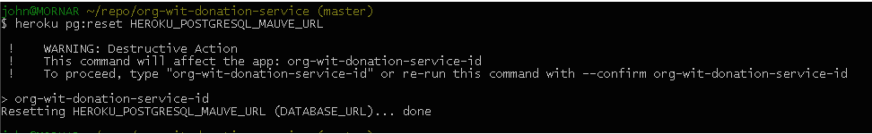
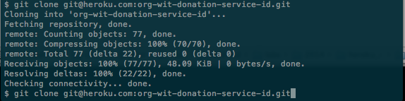
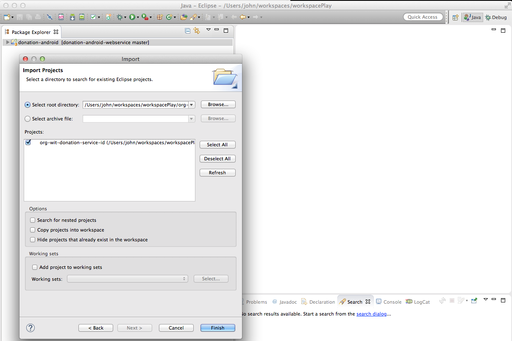

Objectives
Tutorial on deployment of a Play web application to the cloud (Heroku).
Introduction
It is assumed you have already installed git on your computer.
It is also assumed that you have installed ssh and generated a key pair.
- A separate lab and presentation set on the basic use of git and ssh keys is available elsewhere in the course material.
An archive of project donation-service as used in this lab is available to download from here:
Alternatively, you may use a working Play app of your choosing.
This guide on deploying a Play application to Heroku is based on Heroku documentation viewable here [accessed on 2.7.2015].
Local Repository
Warning!
Where your model includes the name User the following sample class illustrates how to avoid a name clash when deploying to Heroku (which uses Heroku PostGres database in which User is a reserved word):
import javax.persistence.Table;
/**
* User has been escaped: This is necessary because User is a reserved word in PostGreSQL
* However, if working in local host and wish to use localhost:9000/@db (for example) to view database
* Then it is necessary to temporarily comment out the line (i.e. @Table(name = "`User`") while testing with local host
*
*/
@Entity
@Table(name="`User`")
public class User extends Model
{
...
...
}If you wish to use the local database and view its contents using the H2 Console (http://localhost:9000/@db) it will be necessary to comment out @Table(name="`User'").
Create a directory on your computer named, for example, org-wit-donation-service.
In Git Bash terminal cd into this new directory.
cd org-wit-donation-serviceCreate a new empty repository:
git initUsing a file manager or otherwise, copy the contents of the donation-service-id project that you can download from here to the org-wit-donation-service folder.

Create and add a file named ProcFile to the root of org-wit-donation-service.
Add the following single line to ProcFile:
web: play run --http.port=$PORT $PLAY_OPTS
Ensure that the .gitignore file is present in the root of org-wit-donation-service.
To ensure a unique app name when deploying to Heroku, change the application name in application.conf, replacing id with your id number.
Add all to the repo and commit:
git add .
git commit -m 'first commit'Verify by running the command
git statusThe response should as follow: 
Heroku repository
Create an account on Heroku.
- Note carefully your login and password.
Download and install Heroku Toolbelt for Windows
- Close and reopen Git Bash following installation of Toolbelt.
Verify installation ok by typing
heroku --version
The response should be something like:
heroku/toolbelt/3.12.1 (i386-mingw32) ruby/1.9.3
Login in to your heroku account from Git Bash
heroku login- You will be prompted for you email and password.
- Successful authentication will be confirmed.
Next create an app and repository on Heroku as follows:
heroku create- The response will be something like this:

Notice the default name assigned by Heroku to the remote app.
Verify with the command
git remote -vand observe a response similar to that in Figure 2.

Now add your SSH keys to Heroku (ensure no space between keys: and add).
heroku keys:add
Finally, push the local repo to Heroku:
git push heroku masterThe response should be somewhat similar to that shown in Figure 4.

We shall now test the service:
- In the specific case of this lab we have been randomly assigned a remote Heroku repo named guarded-reef-267.git.
- The convention for construction a URI to access this repo or service can easily be deduced by studying the URI for this specific service:
http://guarded-reef-2677.herokuapp.com/api/users- The portions /api/users is determined by how we, the developers, wrote the application (donation-service).
- Notice where the actual name of the repo is located in the URI:
- guarded-reef-2677.
Copy this URI into a brower's navigation bar: unfortunately an application error is flagged.
- The reason for this is that we have not set up a suitable database on Heroku. We shall attend to this shortly.
A further example of a url is:
http://donation-v4.herokuapp.com/In this case our application is donation-v4.
Changing name of Heroku app
We shall now change the Heroku-assigned name guarded-reef-2677 to a more meaningful name org-wit-donation-service-id where id is your email address excluding @, periods, underscores and so on. For example john_doe@organs.com becomes johndoeorganscom. This is just a suggestion to ensure that the name you choose for the app on Heroku will be unique.
Run the following command within the Heroku terminal:
heroku apps:rename org-wit-donation-service-id --app guarded-reef-2677A typical response is shown in Figure 5:
Heroku Database
You created a Heroku app in an earlier step (using the command heroku create)
- A database was made available as part of the app creation process.
- You can verify this by running the following command:
heroku pg:infoA typical response is depicted in Figure 1.

In this case the DATABASE_URL is HEROKU_POSTGRESQL_MAUVE_URL.
Log in to Heroku website for more detailed information such as is shown here in Figure 2 for the current project.
In order to make use of this database do the following:
- Modify the application.conf file:
- Comment out any database activation statments such as, for example, db = mem.
- Add the following block to the end of the file.
#================heroku databse config config=========================
db=${DATABASE_URL}
jpa.dialect=org.hibernate.dialect.PostgreSQLDialect
jpa.ddl=update
#================end database config heroku config====================- In the Heroku terminal add and commit the changes:
git add .
git commit -m 'database configured'
git push heroku masterThe response should be similar to that shown in Figure 3. 
Test App
You can test that the application is working correctly in a number of ways, listed here:
- Run the following command: output similar to that in Figure 4 indicates your app has been successfully deployed.
heroku ps
- Next run the command to open a browser: Figure 5 shows the command and additionally the response to the command and the output in the browser if the app is running correctly.
heroku open
- Finally, introduce this URI in a browser's navigation bar: the expected response is shown here in Figure 6:
http://org-wit-donation-service-id.herokuapp.com/api/users
Reset Database
You can reset the database as follows:
- First obtain the DATABASE_URL with the following command:
heroku pg:infoA typical response is depicted in Figure 7.
In this case the DATABASE_URL is HEROKU_POSTGRESQL_MAUVE_URL. The command to run to reset is:
heroku pg:reset HEROKU_POSTGRESQL_MAUVE_URLMore simply you may use the command:
heroku pg:reset DATABASE_URLFollow the instructions as indicated in Figure 8.

If you make changes to a model class then it will be necessary to reset the database.
- Always following a database reset it's advisable (even necessary) to execute a fresh push (touching a file if necessary).
References
Regenerate project (Optional)
You can regenerate your work environment as follows:
- Create a working folder, for example workspacePlay
- Change directory into this folder
cd workspacePlay - If not already logged in to Heroku, do so now:
heroku loginObtain a clone of the remote repo:
git clone git@heroku.com:org-wit-donation-service-id.git
The project will now be recreated in a folder org-wit-donation-service-id.
- Change directory to org-wit-donation-service-id.
- Run the command to allow the project to be imported into an Eclipse workspace:
Launch Eclipse, switch to the workspace workspacePlay and import the project:play eclipsify

Note that earlier we pushed to Heroku with the following command:
git push heroku masterThis will not now work. To understand why check the remote:
git remote -vNotice that it is origin, not heroku.
Working with origin will work ok.
But perhaps it is better to preserve Heroku convention which requires that we:
- Remove origin as the remote
- Replace with heroku
This can easily be achieved with the following commands:
git remote remove origin
git remote add heroku git@heroku.com:org-wit-donation-service-id.gitThen, push with the following command:
git push heroku masterIt is possible to push a local branch other than master to heroku with the following command:
git push heroku other:masterFor example, if the local branch is donation-v4 then the command becomes:
git push heroku donation-v4:master